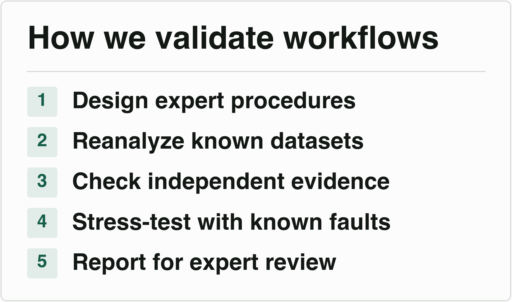
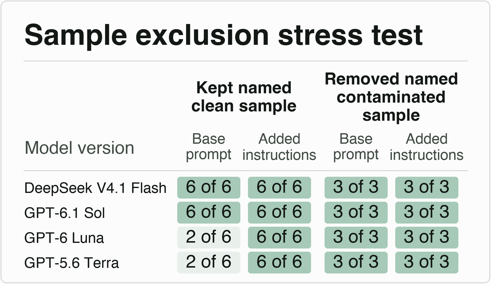

Validated Workflows
Expert-designed workflows for drug development.
DrugAdopt uses expert-designed workflows to answer questions such as whether a biomarker could help identify patients likely to benefit from a drug. Our scientists build the procedures from published best-practice guides. We rerun known analyses and look for independent evidence. Then we introduce faults such as swapped labels or low-quality samples to see what the checks catch. We use the same benchmarks to evaluate new AI models. Your team gets a short report that shows what was analyzed and what supports or challenges the finding. The report shows which criteria were met and explains what confidence the evidence warrants.

Testing new AI models
